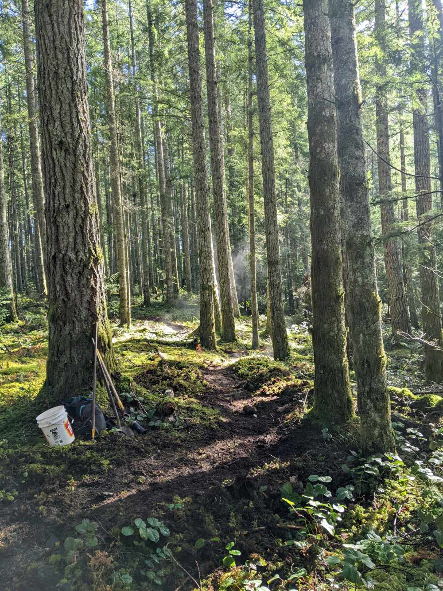
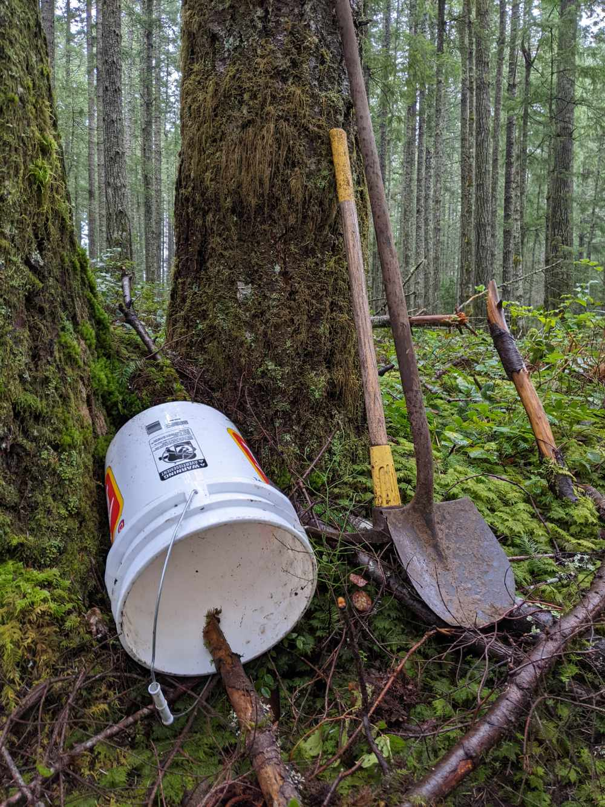
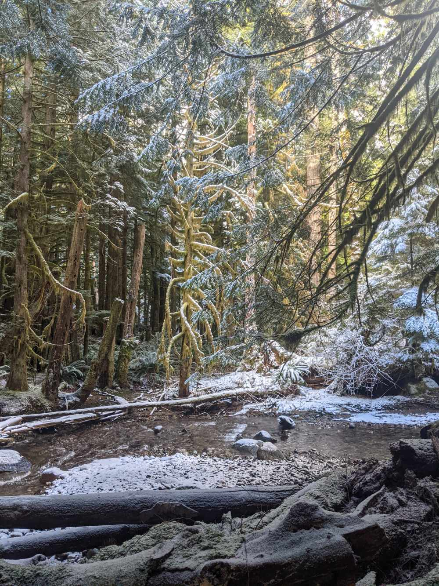

Planning for sustainable trail system in Ladysmith, BC
Ladysmith Trail Stewards is a volunteer-driven organization committed to planning, maintaining, and advocating for sustainable, inclusive, and enjoyable trail experiences in and around Ladysmith, BC. We collaborate with the town and local community to ensure our trails support recreation, conservation, and economic development.
We welcome new members! To get involved and find out about events, please use the contact form below, or join the Ladysmith Trail Stewards Facebook Group.


